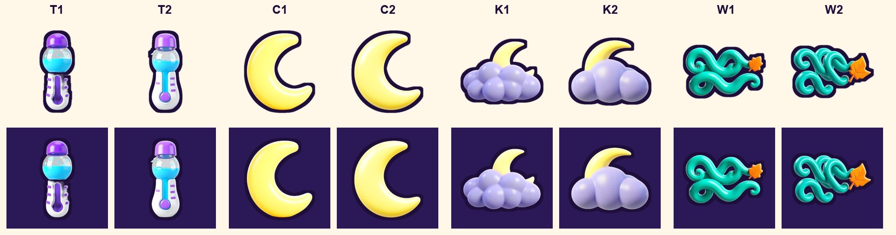
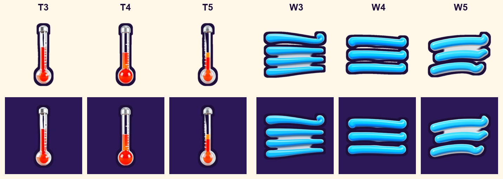
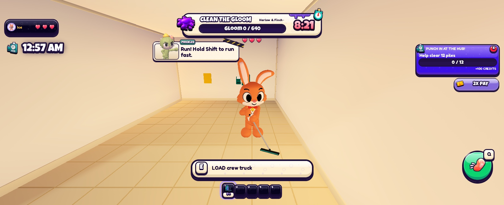
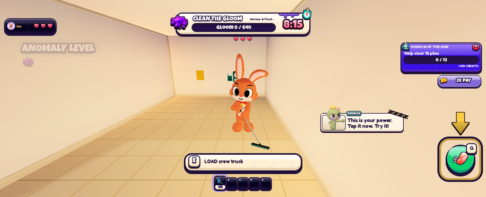
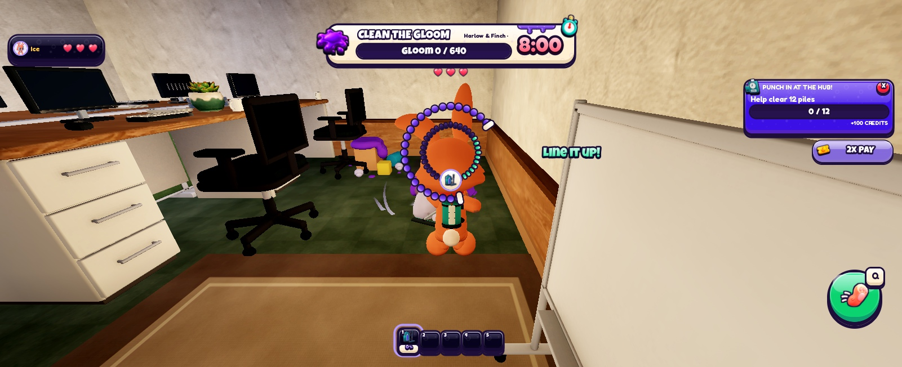
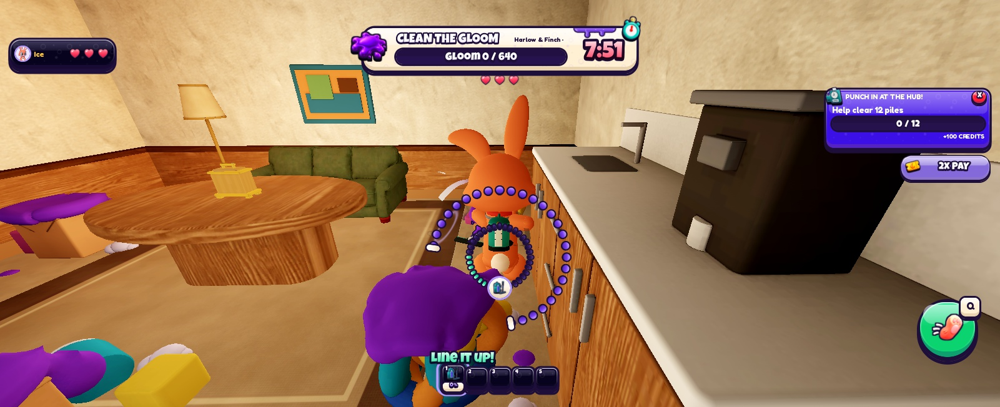
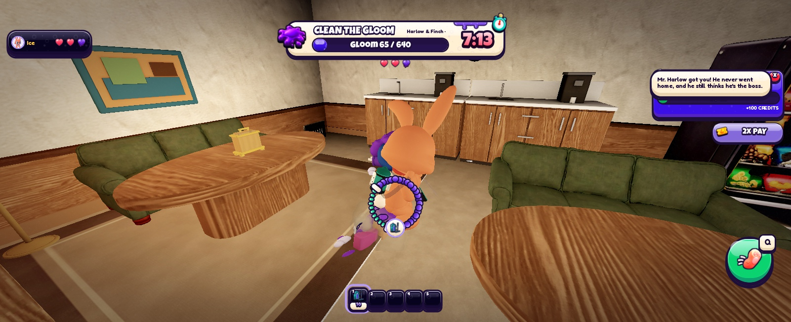
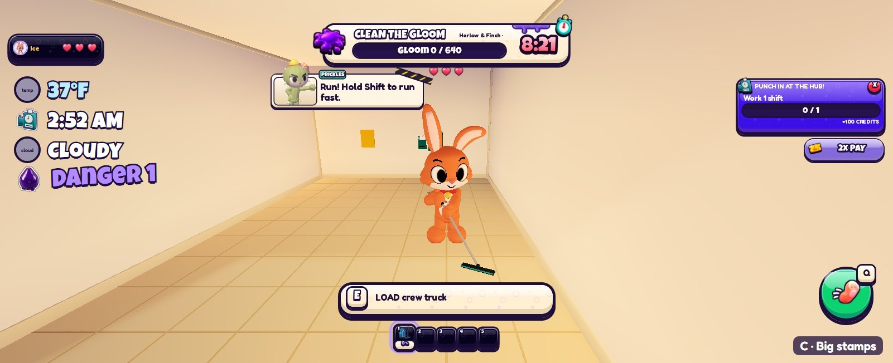

You said cleaning feels too easy, the manager shows up too little, and the buildings feel like a twisty box. I measured the game. Here is what I found and what we can change. Pick Yes, No or Later on each idea. Your picks save by themselves.
New plan, after your picks (17 Nov)
You said yes to 3 ideas: the Gloom level, a second monster, and Floors mode (ideas first). Your notes also gave me 2 new ideas: slow everyone down, with a bigger sprint gap, and more skill: see him and plan your way around him. Here is the plan at our real speed. Each batch is small, so you can play-check it on its own.
Batch 1 · WedGloom level drops. The map card and the landing show 1 or 2 Gloom drops for that map. No new rules. Check: 5 minutes.
Batch 2 · Wed–ThuSlower game, real escapes (card below). One number file. Check: 2 shifts, one with a second player.
Batch 3 · Thu–SatSecond monster joins at 4:30. Two sessions build it side by side. Check: 2 full shifts on each map.
Batch 4 · Thu–FriSkill check while cleaning, only if you say yes below. Built at the same time as batch 3.
Floors modeIdea page on Wed for you to pick from. Building it comes after launch (see below).
What can make launch (lock: Sun 22 Nov): batches 1, 2 and 4, for sure. Batch 3 can make it, but it is the risky one. Today the game is built for exactly one monster. About 20 parts assume that: the heartbeat, chase music, catching, hiding, and the lights. So we build it with an off switch. If your Saturday check finds bugs, it stays off for launch and ships in the first update.
Floors mode, honestly: even at our speed, a good version is about 4–6 days. That means a new run flow, bigger contracts per floor, a lives screen, and new pay numbers. Rushing it into the last 5 days risks the whole launch. I'd make it the first update and pick the ideas this week, so building starts the day after launch.
Your map question (\"maze, or the opposite?\"). You're right, it's the opposite. Every room hangs one step off a loop of halls, so you are never far from a loop. Nothing is deep, and you never have to choose \"do I risk the far wing?\". Lethal Company is hallway-heavy too. What it has that we don't is deep branches: long wings where the good stuff sits at the end, and getting back out is the scary part. So keep our halls. They are our look, not Dandy's World's. After launch, add 1–2 deep wings per building (card below).
Night Shift is being built (18 Nov)
You picked B, The Night Shift: nights in a row, 3 nights a week, a weekly quota. The build has started in 3 parts side by side:
The run itself: nights, weeks, quota, coats, pay, and getting fired.
The screens: picking Night Shift at the truck, NIGHT 4 · WEEK 2 on the readout, "This week: 900 / 1,500", Next night / Clock out, and the Fired! screen.
The manager and the ring getting harder each week.
Your play-check is planned for Saturday.
Truck closer to the building (your ask): the truck's spot is a single number in the code, so moving it now and back later is easy. I'll check the yard in Studio so it lands clear of the props, then move it close to the loading door.
Your question: can we pick the next place? Won't the same map get boring?
The same map: the building is rebuilt every night with a new layout: new halls, rooms, piles, props and spooky surprises. So it's never the exact same place. But it always looks like the same kind of building, and after many nights that can feel samey. You're right to think about it.
Picking the next place: both the Office and the School are already built in the same game place, so switching between nights is possible. The School is scarier (2 drops) and asks for more Gloom, so it fits as the brave choice. Three ways:
Your answer (18 Nov): decide later (dn3). Night Shift launches with one building per run, the one picked at the truck. Choosing places comes back with more buildings in the first update.
The whole new mode: pick a concept (18 Nov)
You're right: "floors" is just how Dandy's World does it, and Lethal Company uses days. So I've stepped back to the whole mode: what a round is in our story, leaving the building and coming back, what the outside is for, rewards, crews, the hub, and new players. Your answers so far are built into all three concepts:
No end: you go until you're out.
The goal and the shift time change every few rounds, starting short.
Next / Clock out vote between rounds.
Coats carry over.
He gets angrier each round.
Each round pays more.
It's the main way to play.
No off switch.
A
Going Down: floors inside one building
Truck drops youClean floor 1Elevator downFloor 2, 3, 4...Walk out to the truck = clock out
Story: the Gloom comes from deep under the building. Every floor down is darker and the manager is stronger.
Leaving the building: only once, at the very end. Loot rides down with you in the elevator. If the crew is wiped, everything that wasn't banked yet is lost.
The outside: only the start and the end.
Feels like: one long, rising dread. Closest to Dandy's World, which you said you don't want to copy.
B · my pick
The Night Shift: nights in a row, a quota every week
Truck to a buildingNight 1 (short)Load the truck + clock outYard: bank, vote, next night's readoutNight 2, 3... every 3 nights = the Weekly Quota
Story: you're the night crew. The company gives you a weekly quota. Meet it and next week's is bigger and the nights are longer. Miss it and you're fired (the run ends). The anomaly grows night by night. It's "Odd Hours" exactly, like Lethal Company's days but in our world.
Leaving the building: every night. Carry your loot out and load it on the truck to bank it. Anything still inside when the truck leaves is lost. That last run to the truck with the manager awake is the skill moment.
The outside: it finally has a job. The yard is the break between nights: bank, vote "Next night / Clock out", see the next night's readout (temp, weather, ANOMALY LEVEL). Later: a small truck shop.
Feels like: calm, scary, breathe, scarier. Every night is a full little story.
C
The Deep Shift: deeper every night, same building
Truck to a buildingClean floor 1Walk out to the truck to bankService lift from the yardFloor B1, B2... deeper
Story: one building, deeper each round (B1, B2...). It uses your earlier "go under the building" idea.
Leaving the building: every round you walk back up to the truck to bank, then take the lift down again.
The outside: the bank and the lift.
Feels like: B and A mixed. Cool, but it needs basement map art we don't have yet, so it can't make the lock.
How concept B works, piece by piece
Run starts / ends
The host picks "Night Shift" at the truck. The run ends when you're fired (missed weekly quota), the whole crew is out of coats, or you vote Clock out to keep your pay.
Difficulty
Week 1: 3 nights of about 3 minutes with small goals, and the manager calm. Each new week: longer nights (up to the full 8.5 min) and a bigger weekly quota. Each night: the manager starts angrier and the ANOMALY LEVEL drops go up.
Rewards
Each night pays more. Meeting the weekly quota pays a week bonus. Your best night shows on the map card and in the hub.
Coats
Coats carry over. Lose your last one and you sit out the night, then come back next night with 1. Everyone out = fired.
Solo vs crew
The goal already scales with crew size. Solo works the same, just smaller.
Joining mid-run
A friend who joins rides in on the next night's truck with 3 coats.
Screens that change
The readout says NIGHT 4 · WEEK 2. The load screen says the night. A night card in the yard. A "Fired!" or "Clocked out" run-over screen with your best night.
New players
Training first (as now). Week 1 is short and calm, so a first run teaches the loop.
The normal shift
Stays as "Quick shift" (one night, no quota week) for short play.
Money touchpoints
None new for launch. The Big Crew pass fits well (bigger crews go deeper). Later ideas are cosmetic only, like truck skins or a "Week 5" badge. No paying for extra coats.
What we measure
The night and week reached, where runs end (fired / wiped / clocked out), Next vs Clock out votes, and loot lost at the truck.
Skill hooks
The ring, the push-or-bank vote, the run out to the truck with loot, and reading the manager.
Plan and honest risks
B by lock (Sun 22 Nov): it's the cheapest concept, because "Another shift" already takes the crew out on the truck and back into a new building. Three sessions work side by side Thu–Fri, you check it Sat, then fix and lock. Risks:
Pay counted twice across nights. Paying each night as it ends avoids this.
The yard break must stay short.
Kids must get "weekly quota" at a glance, with words like "This week: 1,500 Gloom".
Balancing an endless run takes a few rounds of your play.
A is about the same work but closer to Dandy's World. C needs new basement art, so it's after launch.
Earlier: the floors ideas and research (18 Nov)
You said yes to Floors mode and asked to talk ideas through first. Here's the full picture. Further down are the choices for you, each with Yes / No, and then the plan to have a first version you can play before content lock (Sun 22 Nov), with an off switch.
Good news from the code
The game can already run shift after shift on the same server: "Another shift" builds a brand new office each time. So floors are mostly new rules on top of what works today: harder each floor, coats carried over, and a finish line. We don't need a new map or new art for a first version.
What other games do (research, not copying)
Dandy's World: each floor has a goal (machines). Then an elevator opens for a few seconds and anyone left outside is lost. More monsters on deeper floors, and a quiet break floor now and then.
DOORS / Pressure: about 100 rooms in a row, getting harder, with a big finale near the end. Revives are rare (one per run in DOORS).
Lethal Company / R.E.P.O.: each level has a money goal (a quota) that grows. A shop between levels. Miss the goal and the run ends.
What almost all of them share: a clear goal each floor, a short "everyone get in" moment between floors, one new danger at a time, a calm moment now and then, and only limited second chances.
My research notes have the sources. A few wikis blocked my reader, so some details are from search snippets and marked unsure.
My suggestion for Odd Hours: "The Night Run"
One floor = one shorter shift in the same building (a new layout each floor). The landing readout says FLOOR 2, and the ANOMALY LEVEL drops go up with the floor, so the readout you picked tells you how scary it will be.
Goal: clean the floor's Gloom goal, then get to the elevator (the truck spot today) together. That's the "everyone in" moment.
Getting scarier: floor 1 is calm, and each floor starts the manager one step angrier with shorter rests. From floor 3 the rings are tighter. Later (after launch) the second monster joins on deep floors.
Coats carry over between floors. That's what makes deep floors tense. Caught on your last coat? You sit out the rest of that floor and come back on the next floor with 1 coat.
Push or bank: between floors the crew votes Next floor (more pay, more danger) or Clock out (keep your pay). Each floor pays more than the last.
The run ends when the whole crew is out, the floor's goal isn't met in time, or you finish the last floor. Later: the hub shows your best floor.
Your choices
Plan: first playable Floors before lock (Sun 22 Nov)
Thu: 3 sessions work side by side, each on its own part of the code.
The run itself: floor number, a goal and time per floor, coats carried over, Next floor / Clock out, how the run ends.
The screens: choosing Floors at the truck, FLOOR N on the readout and load screen, the run-over screen.
The manager getting angrier per floor.
Fri: the three parts join up, then my own real-play test: 3 floors solo and with a second player.
Sat: your play-check. Fixes the same day.
Sun: lock. If anything is shaky, the off switch keeps Floors hidden and the normal shift plays exactly as now.
Honest risks: pay must not be counted twice across floors (the plan pays each floor as you go, which the game already does safely). The load screen between floors must stay quick. Kids must understand "Next floor or clock out" at a glance. You've been right that we move faster than my estimates, so this plan is tight but doable.
Your question: halls or open spaces? (my answer)
You asked me to weigh it for our game. My answer: keep our halls and rooms. Don't copy Dandy's World's open floors. Here's why:
Our maps are real buildings (an office, a school). Halls and rooms are what make them feel real and spooky. Lethal Company is the same: tight insides, and players get good by listening and remembering, not by seeing far.
What the measuring showed is not "too many halls". It's that nothing is deep: every room is one step off a loop, so you never have to make a risky choice. The fix is the DFS hall growth you liked (on the list for after launch), not open floors.
Skill in our game should come from reading the manager (his pen clicks, flickering lights and footsteps are already in) and from the ring. A good next step after launch: some glass office walls, so you can glimpse him through rooms. They show real offices and give you sight without opening the map up.
Where your "too easy while cleaning" ask stands
Built, ready for your check: the ring skill check (2–3 rings a pile, a miss makes noise) and the landing readout with the anomaly level and icons.
Approved, being designed now: Floors mode (above).
Saved for later, as you said: the second monster. Also later: the slower game with real escapes, deeper buildings (DFS halls), and voices.
You said no: busier manager, shorter rests, comes looking, third step, warning, wide halls, weather, and the map changes.
Quick ones: more threat while cleaning, before lock
Both build on your ring idea, so skill decides the danger.
Your icons are in the game (18 Nov)
Your picks (T4, C2, K1, W4) are uploaded to Icey Labs and in the readout. Here they are in real play: the thermometer and the clear-night moon. Cloudy and windy show on nights with that weather. All 7590 tests pass.
New icons for the landing readout (18 Nov)
Here are 2 tries for each new icon, made on our own computer with no paid tools: a thermometer (T1, T2), a clear night (C1, C2), cloudy (K1, K2) and windy (W1, W2). Each is shown on light and dark backgrounds. There are no stars or sparkles. Nothing is uploaded yet. I upload to Icey Labs only after you pick. Honest take: the moons and clouds work. The thermometers look a bit like baby bottles, and the wind swirls a bit like vines. Pick one per icon, or say "redo" in the note.

Second try (T3–T5 thermometers with a clear glass bulb and scale marks; W3–W5 wind gust lines). The thermometers read right now, and T4 is my pick. The wind lines are better but look a bit like stacked bars. W3 is the best one, and the only one with a clear curl.

Polish, seen in real play (18 Nov)
No more gap before the temperature and weather, and the Gloom drop is bigger. The ring now finds the top of your character (ears and hats too). It goes above your head, or beside you when there's no room, like here with the camera close. All 7590 tests pass.
The ring beside you (camera close). With the camera further back it sits above your head. That case is checked by a test, but I haven't captured it yet.
Built from your picks (18 Nov, real play)
Landing readout (look C): it waits until the ARRIVAL card closes. Then it shows 3 screens, one at a time, each fading in and out. Icons for the temperature and weather are still to come, so those lines have an empty space on the left for now. All 7557 tests pass.
Screen 1: temperature and weather.

Screen 2: the time.

Screen 3: ANOMALY LEVEL, with 1 drop for the Office (2 for the School). Caught while fading in. I think the drop should be bigger.
Ring: now 2–3 quicker rings per pile. In a test, one pile gave 3 rings. On a computer, the ring sits higher, but it still covers your head and ears.

The ring, higher.
Skill check: first real play (18 Nov)
Your ring idea is in the game, with an off switch. Hold the vacuum on a pile and a purple ring with a gap closes in. Move your mouse to slide the vacuum icon around the inner circle, into the gap (the green beads), before the ring lands. A miss makes a noise the manager can hear. The gap gets smaller as the pile gets cleaner. In a test run: 4 rings, 1 hit, 3 misses, and every miss made a noise. All 7545 tests pass.

The ring closing in. "Line it up!" shows for your first 2 rings.

The ring as it lands.Fixed: "Line it up!" now sits beside the ring, not on the hotbar. On a phone it sits on the left, away from the action buttons. All 7550 tests pass.
Things I noticed: the ring sits on top of your character. ("Line it up!" used to overlap the hotbar; that is fixed, see above.) Also, a pile only takes 2.5 s to clean, so you get about 1 ring per pile, not a few that keep shrinking. To get more rings per pile, the rings must be faster or piles must take longer. Tell me in the note which you'd like, and where the ring should sit.
Landing readout: pick a look (18 Nov)
You picked: wait until the ARRIVAL card closes, and no card or back frame, more like a diagnostics screen or a voice report. Here are 3 quick looks, drawn over a real game screenshot. In the game, the lines come in one at a time (typed or faded), stay a few seconds, then fade away. Grey circles mean an icon still to be made. Pick Yes on the one you want.

Your answers, round 2 (17 Nov, late)
Building now: the landing card. When you touch down, it shows Temp, Time, Weather and Danger (Office 1 drop, School 2) for a few seconds. It is always night. The temp and time are random, the weather is Clear, Cloudy or Windy, and the whole crew sees the same card. On hold: the second monster, until you pick which one. Later: the slower game.
The landing card in real play (Office, muted Studio Play, 17 Nov). The card is on the left. Every shift gets different numbers. The specs all pass (7412 of 7412).
"Are we using Kruskal's?" Close. We grow the halls like randomized Prim's: each step adds a random hall anywhere on the edge of what is built. Kruskal's looks the same. Both make lots of short, bushy branches, and that is why nothing feels deep. A DFS (the "recursive backtracker") keeps growing from the newest end. It makes long, winding paths with real dead ends, naturally and without forcing it. The catch: our grid has only 12 crossings (4 × 3), so even DFS can only make 1–2 deep branches. For real depth it also needs a bigger grid with shorter steps (for example 6 × 4). Work: about 2–3 days, then I measure 40 builds again and you do a feel check. Pick below.
Skill check ideas. I think I understand your ring idea. Here it is, plus 3 others that are not the usual timing bar. Every one gets harder as the pile gets smaller, and a miss makes a noise the monster can hear. Each also works on a phone (drag) and a controller (stick).
What the game does today
1 monsterThe whole shift. No new monster ever comes, and more players do not add one.
+1 speedHe only gets faster twice, at 2:00 and 4:00, by a tiny bit (chase 20 → 21).
Lots of restingHe sits at a desk for 10–22 s every 35–70 s. When he gets mad he walks away for 30–60 s.
56% hallwayOver half the floor is hallway. Every room has only one door, so every room is a dead end.
~24 studsHow far you can usually see in a hall. He can see you from 125 away, so he spots you first.
12–18 studsThe head start a full sprint gives you over him. Chases end fast.
Same boxEvery building is the same 4 × 3 grid. The far room is 323–335 studs away in 3 of 4 builds.
13 s walkOutside is safe and pretty, with 7 small spooky surprises, but nothing changes your shift.
What other games do: Lethal Company sends in more monsters as the day goes on and rolls weather when you land. Dandy's World starts each run with 2 monsters and adds more each floor, up to 8, with quiet early floors. Both keep calm moments between scary ones, so the scary parts hit harder.
Small changes · can be ready before content lock (Sun 22 Nov)